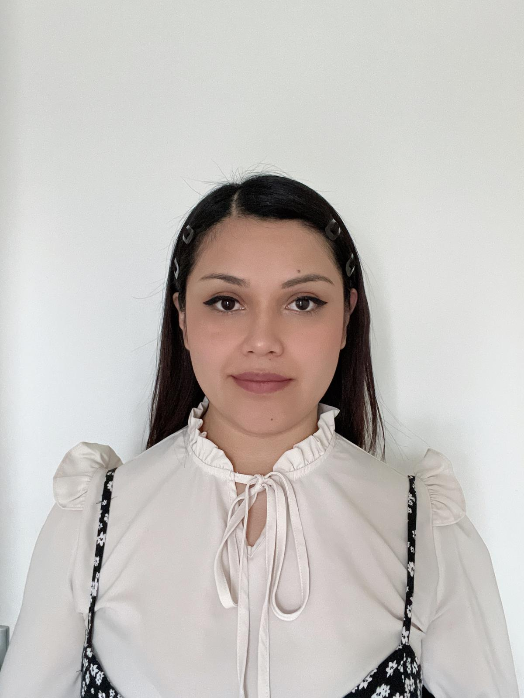

Evelin Itzel Sanchez Alvarez
Contact
📱 +31 (06) 3825 1288
✉️ evelinbom5@gmail.com
Vaardigheden
Handvaardigheden
- • Haken (amigurumis)
- • Handgemaakte producten
- • Basis bakvaardigheden
- • Kinderschmink
Persoonlijke vaardigheden
- • Verantwoordelijk
- • Creatief
- • Georganiseerd
- • Leergierig
- • Teamspeler
- • Klantgericht
Multimedia & Technologie
- • Videobewerking (basis)
- • Fotografie (basis)
- • Social media beheer
- • Basis computer
Talen
- • Spaans — Moedertaal
- • Engels — Basis
- • Nederlands — A0–A2
Opleiding
Middelbare school / Baccalaureaat
Instituto Tecnológico Lumen Gentium
Afgestudeerd: 2013
Beschikbaarheid
Ma: 9:00 - 14:00
Wo: 9:00 - 12:00
Do: 9:00 - 14:00
Vr: 9:00 - 11:00
Weekenden: 8:00 - 16:00
* Alleen deeltijd
Portfolio
Instagram: @lanamenita
Professioneel Profiel
Enthousiaste, georganiseerde en creatieve doener met ervaring in klantenservice, magazijnwerk en allerlei handvaardigheden. Ik ben stipt, werk graag samen en sta altijd klaar om te helpen. Ik zoek een leuke deeltijdbaan, in de detailhandel, kinderopvang, dierenopvang of iets creatiefs, waar ik mijn ervaring kan inzetten en tegelijk nieuwe dingen kan leren. Belangrijk voor mij is een goede balans met mijn gezinsleven, én plezier in wat ik doe!
Werkervaring
Magazijnmedewerker — Andrea Schoenenfabriek
Aug 2019 - Feb 2020
- Verwerken en registreren van geretourneerde bestellingen
- Ontvangst, controle en opslag van binnenkomende goederen
- Invoer van producten in het voorraadbeheersysteem
- Klantenservice en kassawerk
- Deelname aan winkelinventarisaties
Schoonmaakdienst (Freelance)
Incidenteel
- Huishoudelijke schoonmaak
Ambachtsvrouw (Freelance)
Huidige activiteit
- Maken en verkopen van haak- en amigurumi-artikelen
- Verkoop op lokale markten
- Productie en verkoop van bakproducten
- Contentcreatie voor social media
Vrijwilligerswerk & Evenementen
Incidenteel
- Kinderschminken
- Assistentie bij evenementen
Kinderopvang (Oppas)
Incidenteel
- Oppas voor kinderen vanaf 2 jaar
- Ervaring als moeder van jong kind
Dierenverzorging
Persoonlijke ervaring
- Verzorging van honden
- Tijdelijke opvang huisdieren
Werkvoorkeuren
- Werk in detailhandel
- Creatieve handwerk
- Kinderopvang (Spaanstalige gezinnen)
- Dierenverzorging
- Evenementenondersteuning
Aanvullende Informatie
- Bereid om training te volgen
- Geïnteresseerd in fotografie
- Beschikbaar voor creatief werk
- Voorkeur voor Spaanstalige omgeving